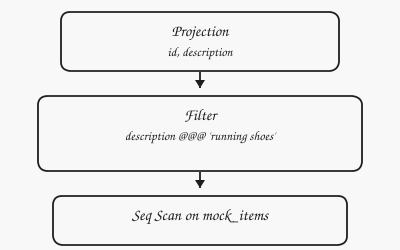
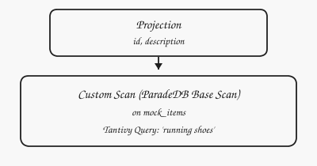
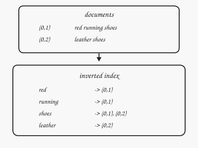
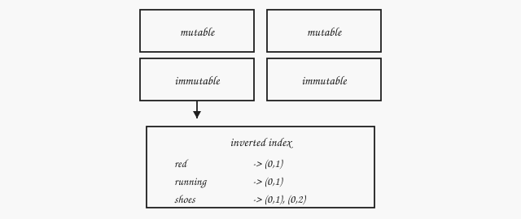
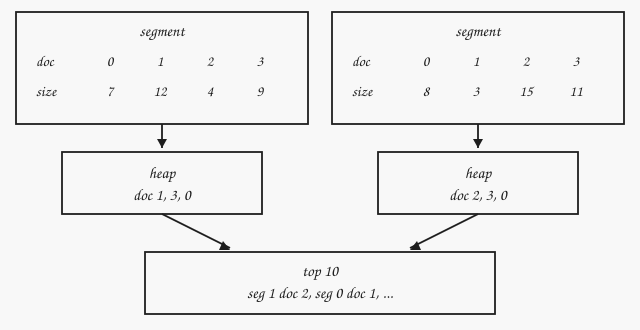
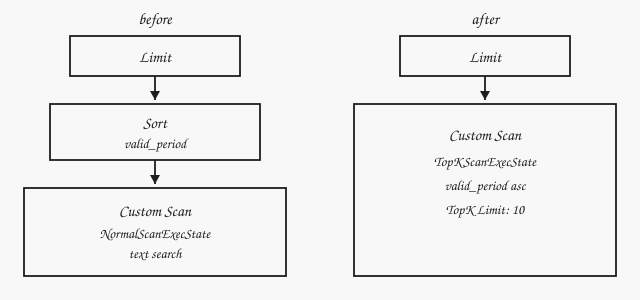

October 16, 2026
What is ParadeDB and how I made a contribution
Intro to ParadeDB
I was just searching through dbdb.io, and came across ParadeDB by accident. Simply said, ParadeDB brings full-text search capabilities to your existing PostgreSQL database.
Traditionally, software companies keep two services, one is usually an OLTP database like PostgreSQL to injest data from the clients, and another is a separate search engine, like Elasticsearch, for full-text search queries. These two services are connected through an ETL pipeline. The cost is in maintaining two services, and sometimes having stale data to query.
ParadeDB is a PostgreSQL extension that tries to solve search differently. It uses pgrx to be able to write PostgreSQL extensions in Rust and instead of writing a search engine from scratch, ParadeDB uses Tantivy, which is a rewrite of Lucene, famous search engine Elasticsearch uses, in Rust. The last component is Apache DataFusion. Normally, people want to derive some analytics from the text being search, and ParadeDB uses DataFusion, which is a query engine (again in Rust), to run the analytical queries. I really like how the authors decided to compose ParadeDB from already existing components and trying to make them work togther, rather than building everything from scratch!
In reality it is a lot more complicated than what it looks like on the surface. In this blog post, I take a dive into ParadeDB’s codebase to understand some of its internal components, and then explain how I made a small contribution.
Life of a query in ParadeDB
Let’s explain how an extension is written in PostgreSQL by looking at a simple query from ParadeDB.
SELECT id, description
FROM mock_items
WHERE description @@@ 'running shoes';
The @@@ is ParadeDB’s search operator and it’s not part of SQL, so ParadeDB must first register it into Postgres’s catalog, and associate it with a function, such that whenever Postgres sees @@@, it knows what function to call. This registration happens when CREATE EXTENSION pg_search statement is run in SQL. If you are curious where/how this function is implemented, you can take a look at the atatat.rs operator inside src/api/operator directory.
#[pg_operator(immutable, parallel_safe, cost = 1000000000)]
#[opname(pg_catalog.@@@)]
pub fn search_with_parse(_element: AnyElement, query: &str) -> bool {
panic!("query is incompatible with pg_search's `@@@(field, TEXT)` operator: `{query}`")
}
The implementation panics! That’s because ParadeDB never wants to run this function, and instead uses super fast tantivity indexes. The definition is only here so that we can write @@@ in our SQL statement. You can see in the pgrx macro the cost of calling this function is 1000000000 per row. That way ParadeDB makes sure that this function is never called.
But how is the actual search performed? Let’s first look at the query plan for this simple query in Postgres.

ParadeDB replaces the sequential scan, which would run the @@@ function per each record, with a CustomScan.

A CustomScan in Postgres is a node in query plan that the extension owns. Think about it this way: each node produces some rows, that its parent consumes. When Postgres reaches a CustomScan it delegates the job of producing rows to the extension.
Let’s next see the details of how this is done. Postgres has multiple ways, or paths, of running the query. The planner, a.k.a optimizer, calculates the cost associated with each path and then chooses the cheapest. ParadeDB registers set_rel_pathlist_hook hook, that during Postgres planning calls back paradedb_rel_pathlist_callback and adds ParadeDB’s custom path to the pool of paths in Postgres. If that path is chosen, the custom scan in ParadeDB gets executed. Remember we set the cost of the @@@ operator to 1000000000 per row. That makes a sequential scan that would call this function look enormously expensive, so the custom path wins when ParadeDB has added one.
To see how everything works in the code you can check src/postgres/customscan/basescan/mod.rs, which contains the implementations of CustomScan trait. After the custom path is created and chosen by the planner, exec_custom_scan is called to execute the custom path. This function queries the tantivity index to retrieve the results.
Tantivy under the hood
Let’s briefly discuss what inverted indexes are and how Tantivy works internally. ParadeDB stores each indexed Postgres row as one Tantivy document. The document holds the searchable text and the row’s ctid, which is that row’s address in the heap. For instance the ctid (2, 3) points to the third page and the third slot in that page, since page numbers start at 0. The index over these documents is inverted: each term points at the documents that contain it.

A search for running shoes splits the query into the same kind of terms, for instance running and shoes, looks up each term’s list of ctids, and keeps a document that contains at least one of them. ParadeDB then reads that document’s ctid and fetches the row from Postgres.
It seems simple on the surface, but under the hood it’s quite complex. Tantivy groups indexes into segments, and a background job merges them and garbage collects obsolete records. To make things more complex, ParadeDB adds mutable segments to Tantivity, quite similar to log structured merge trees.

Lastly, lets dig deeper into one of Tantivity’s optimizations and learn how it efficiently executes Top-N queries, which is very common form in text search queries. Each document in Tantivity can have many fields other than the indexed field. For example, an index could be built on “description” field, while the document contains other fields, such as “size” or “date created” alongside the index. Tantivity can store other fields in a columnar format in the same order as the documents. The position in that column is the document id, so document 2 in the inverted index is also position 2 in the size column. The fields created this way are called “fast fields” in Tantivity. Fast fields allows Tantivity to access fields, other than the index to do things like sorting. The main advantage of fast fields is that they allow Tantivity to do the sorting without the need to retrieve the entire document, which makes sorting cheaper.
To make things more concrete consider a Top-N query. Building on our previous example, lets say we want to order the shoes by “size” and take the Top-10. Tantivity walks every match in a segment and pushes that document id, together with its size, into the segment’s heap. The heap keeps only the ten largest. A second heap merges them, and it records the segment as well, because document 2 on the left is a different shoe from document 2 on the right. Schematically, this is how it looks like:

The problem: order by range!
Postgres supports ranges. For example tstzrange('2023-01-01', '2023-02-01') is a range that basically means every timestamp from the first instant up to, but not including, the second. Interestingly, Postgres also supports sorting by a range. It first tries to order the records by the lower bound and then the upper bound. Lets now consider a Top-N query in ParadeDB that orders by a range:
Issue 2688 is this query:
SELECT id, title, category
FROM data_records
WHERE title @@@ 'product'
ORDER BY valid_period
LIMIT 10;
Where valid_period is a tstzrange like tstzrange('2023-01-01', '2023-02-01'). If you previously ran this query, you’d get the following error in ParadeDB:
ERROR: should be able to collect top-n in segment: SchemaError("Fast field not available: '\"valid_period\"'")
ParadeDB tried to retrieve Top-10 from Tantivity, but Tantivity didn’t have any fast fields for valid_period. That’s because Tantivity treats ranges as json with the following schema:
{
"lower": "2023-01-01",
"upper": "2023-02-01",
"empty": false,
"lower_inclusive": true,
"upper_inclusive": false,
"lower_unbounded": false,
"upper_unbounded": false
}
Tantivity stores each field in this json separately as a fast field. To fix this problem, we need to implement the Postgres range_cmp inside ParadeDB. We first define the following struct, which maps to how Tantivity stores each range json:
#[derive(Clone, Debug, PartialEq, Eq, PartialOrd, Ord)]
pub struct RangeSortKey<V: Ord> {
empty: u8,
lower_bounded: u8,
lower: Option<V>,
lower_inclusive: u8,
upper_bounded: u8,
upper: Option<V>,
upper_inclusive: u8,
}
The derived order on RangeSortKey struct compares the fields one by one, and the constants ensure that the ordering matches Postgres’s ordering.
const EMPTY: u8 = 0;
const NON_EMPTY: u8 = 1;
const LOWER_UNBOUNDED: u8 = 0;
const LOWER_FINITE: u8 = 1;
const LOWER_INCLUSIVE: u8 = 0;
const LOWER_EXCLUSIVE: u8 = 1;
const UPPER_FINITE: u8 = 0;
const UPPER_UNBOUNDED: u8 = 1;
const UPPER_EXCLUSIVE: u8 = 0;
const UPPER_INCLUSIVE: u8 = 1;
For instance, the all the inclusive lower bounds come before exclusive lower bounds, because LOWER_INCLUSIVE: u8 = 0 < LOWER_EXCLUSIVE: u8 = 1 matching Postgres’s range comparison. The rest of the implementation details are in src/index/reader/sort_by_range.rs.
Next, we modify search_top_k_in_segments in src/index/reader/index.rs to actually use the newly defined structs for Top-N:
if matches!(field.field_type(), SearchFieldType::Range(_)) {
return TopKSearchResults::new_for_discarded_field(self.top_in_segments(
segment_ids,
(SortByRange::for_field(sort_field), order),
erased_features,
n,
offset,
aux_collector,
))
.into();
}
And that’s it for the scan itself. The planner also has to agree that the range is sortable, and only when it is the first ORDER BY key, so ORDER BY price, valid_period still gets a Postgres Sort. You can read more about these details in the PR. Let’s look at how the query plan changed:
The error above was the Top-N scan panicking. ParadeDB then stopped pushing the order down, so Postgres put a Sort on valid_period above a normal scan. The fix removes that Sort.

Previously, the sorting was done by Postgres, because ParadeDB didn’t use Top-N execution and only did the text search. The downside of this approach was that all rows must be sorted first before Postgres chooses the Top-10 records. With order by pushed down, only the Top-10 documents are materialized in Postgres, which makes things a lot faster!
Summary. ParadeDB takes the idea of composable database systems seriously with Postgres at its core, Tantivity for search, Datafusion for analytics, joined together with pgrx. In this post, I tried to explain how these different part work together while also getting into some of the internals in more details, but this was the tip of the iceberge!